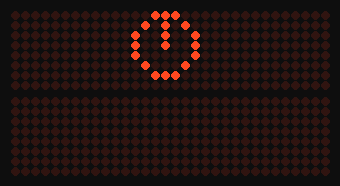
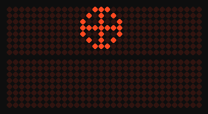
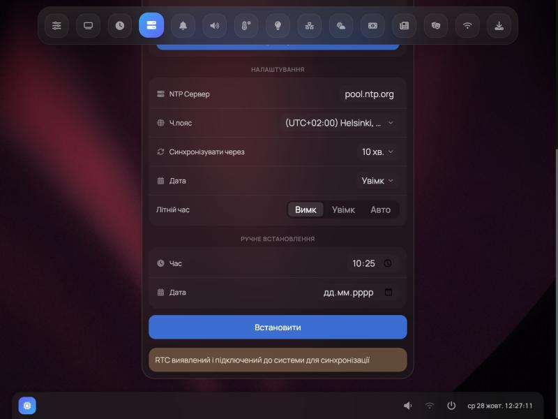

Інструкція користувача
Годинник-інформер на ESP32 і матрицях MAX7219: час, погода, новини, курси, датчики, підсвітка, голос щогодини. Налаштовується з будь-якого браузера у вашій мережі.
Перший запуск
- Увімкніть годинник. Поки він не знає вашої мережі, він працює власною точкою Wi-Fi «Clock ESP» (без пароля).
- Під'єднайтеся до неї з телефона чи комп'ютера й відкрийте
http://192.168.4.1. - Майстер запитає мову, кількість поверхів і матриць та вашу мережу Wi-Fi. Під'єднавшись, годинник показує на табло свою адресу в мережі — відкривайте її в браузері.
Поки годинник під час запуску чекає мережу, табло показує, що відбувається: «Синхронізація часу», «Перевірка інтернету», «Перевірка оновлень», «Завантаження погоди» тощо. На двох поверхах зверху — значок із рухом, знизу — напис; на одному — напис.


Сторінки веб-інтерфейсу
Меню сторінок — рядок значків угорі (наведіть курсор — з'явиться назва); на телефоні — кнопка ☰ угорі праворуч. Назви — як в інтерфейсі українською:
| Сторінка | Що там |
|---|---|
| Налаштування | текст для табло, ім'я й пароль доступу до веб-інтерфейсу, мова інтерфейсу |
| Дисплей | кількість матриць і поверхів, шрифти, швидкість, яскравість (ручна, за датчиком світла, поріг), відключення дисплея на ніч |
| Циферблат | вигляд годинника, ефекти зміни цифр, час показу |
| Час | сервер NTP, часовий пояс, синхронізація, літній час: Вимк / Увімк / Авто, ручне встановлення |
| Будильник і нагадування | будильники й нагадування |
| Звук | голос щогодини (DFPlayer) або зумер, гучність |
| Датчики | температура, вологість, тиск, CO₂, історія |
| LED підсвічування | стрічка WS2812B: ефекти, яскравість |
| MQTT + Сервіси | MQTT і Home Assistant, narodmon |
| Погода, Валюта, Новини, Розваги | джерела даних і ключі доступу (OpenWeatherMap, Weatherbit, GNews, NewsData…) |
| Wi-Fi | мережі, точка доступу |
| Оновлення | вкладки «Оновити» (версія й оновлення по мережі), «Файл конфігурації» (збереження, відновлення, скидання налаштувань), «Завантажити» (звуки для SD-карти, корпуси для 3D-друку) |
Сторінка System (журнал подій, пам'ять, налагодження по Wi-Fi) і ця інструкція відкриваються з меню годинника: на комп'ютері — кнопка зі значком годинника внизу ліворуч, пункт «System info & logs»; на телефоні — кнопка ⋮ внизу праворуч, пункт «System Log».
Яскравість і ніч
- За датчиком світла яскравість змінюється плавно, по одному кроку, і не чекає кінця прокрутки новин. Поріг — на сторінці «Дисплей».
- Відключення дисплея на ніч («Дисплей»): поки табло погашене, годинник не завантажує новини, погоду й курси, але лишається в мережі — веб-інтерфейс доступний. Уранці показ продовжується з того місця, де зупинився.
- Будильник уночі вмикає табло на час дзвінка; повідомлення, надіслане вночі, більше не лишає табло ввімкненим до ранку.
Час і літній час
- Час береться з інтернету (NTP). Після перезапуску годинник одразу показує системний час (він переживає перезапуск), а точний — щойно з'явиться інтернет.
- Літній час «Авто» — перехід за правилами Європи (остання неділя березня й жовтня). «Увімк» — завжди +1 година, «Вимк» — без літнього часу. Зміна пояса чи літнього часу діє одразу, без чекання синхронізації.

Оновлення прошивки
«Оновлення» → «Оновити» показує встановлену й найновішу версію та історію змін. Оновлення приходять лише з цього проєкту (Informer Clock UA), а не з сервера автора оригіналу. Перейти на Informer Clock UA з прошивки автора — один раз через USB: прошивальник у браузері; налаштування при цьому зберігаються, якщо не ставити позначку «стерти».
Налагодження по Wi-Fi
Сторінка System → перемикач «Налагодження по Wi-Fi». Коли ввімкнено:
- журнал роботи — на порту 23:
nc <адреса-годинника> 23(macOS, Linux) або PuTTY (Windows, тип з'єднання Raw, порт 23); - прошивка по Wi-Fi для розробників (ArduinoOTA, порт 3232):
pio run -e clock -t upload --upload-port <адреса>; якщо в «Налаштуваннях» задано ім'я й пароль — додайтеPLATFORMIO_UPLOAD_FLAGS="--auth=<пароль>".
Вимкнено — порти закриті. Причина будь-якої аварії записується в журнал подій сторінки System і без цього перемикача.
Голос і звуки (DFPlayer)
Розпакуйте архів «Звуки для SD-карти» («Оновлення» → «Завантажити») у корінь microSD-картки: папки 01–06 — голоси (вибираються на сторінці «Звук»), 15 — мелодії перед оголошенням часу, 16 — звуки будильника. Оголошення звучить на початку кожної години: мелодія, «Зараз», година.
Кнопка на годиннику
- Коротке натискання: у мережі — наступний розділ інформації; без мережі — спроба під'єднатися до збереженої мережі.
- Під час дзвінка будильника: коротке натискання — відкласти (дзвінок повториться приблизно за 5 хв), утримання ≥2 с — вимкнути.
- Утримання ≈5 с — перемкнути режим: власна точка доступу «Clock ESP» ↔ під'єднання до вашої мережі; годинник перезапуститься.
Підказка в інтерфейсі про скидання кнопкою за ~20 с успадкована від оригіналу: за кодом 2.7.1 годинник уже через 5 с перемикає режим і перезапускається. Скидайте налаштування з веб-інтерфейсу (нижче) або прошивальником з позначкою «стерти».
Якщо щось не так
- Годинник не з'являється в мережі. Видно точку «Clock ESP» — значить, він не під'єднався до вашої мережі: зайдіть на
192.168.4.1і виберіть мережу знову. - «Нема інтернету». Годинник перевіряє зв'язок із 8.8.8.8 і 1.1.1.1, далі — http://www.msftconnecttest.com. Без інтернету погода й новини не оновлюються, але час іде; Wi-Fi перепідключається, лише коли не відповідає сам роутер.
- Скидання налаштувань: «Оновлення» → «Файл конфігурації» → «Повернення до заводських установок». Після перезапуску — знову точка «Clock ESP».
- Журнал подій (сторінка System) показує перезапуски, аварії та їх причини — додайте його до повідомлення про помилку.
User manual
An information clock on ESP32 and MAX7219 matrices: time, weather, news, exchange rates, sensors, backlight, hourly voice. Configured from any browser on your network.
First start
- Power the clock. Until it knows your network, it runs its own Wi-Fi access point “Clock ESP” (no password).
- Join it from a phone or computer and open
http://192.168.4.1. - The wizard asks for the language, the number of floors and matrices, and your Wi-Fi network. Once connected, the clock shows its network address on the display — open it in a browser.
While the clock waits for the network during start-up, the display shows what is going on: “Time sync”, “Checking internet”, “Checking for updates”, “Loading weather” and so on. On two floors there is an animated icon on top and text below; on one floor — the text.
Web interface pages
The page menu is the row of icons at the top (hover to see the name); on a phone — the ☰ button at the top right. Names as they appear in the English interface:
| Page | What is there |
|---|---|
| Settings | display text, web interface user name and password, interface language |
| Display | matrix and floor count, fonts, speed, brightness (manual, light sensor, threshold), shut down the display at night |
| ClockFace | clock look, digit transition effects, display time |
| Time | NTP server, time zone, sync, summer time: Off / On / Auto, manual setting |
| Alarm & Reminders | alarms and reminders |
| Sound | hourly voice (DFPlayer) or buzzer, volume |
| Sensors | temperature, humidity, pressure, CO₂, history |
| LED Light | WS2812B strip: effects, brightness |
| MQTT + Services | MQTT and Home Assistant, narodmon |
| Weather, Currency, News, Entertainment | data sources and API keys (OpenWeatherMap, Weatherbit, GNews, NewsData…) |
| Wi-Fi | networks, access point |
| Update | tabs “Update” (version and over-the-air update), “Config File” (backup, restore, factory reset), “Download” (sounds for the SD card, cases for 3D printing) |
The System page (event log, memory, Wi-Fi debug) and this manual open from the clock menu: on a computer — the button with the clock icon at the bottom left, item “System info & logs”; on a phone — the ⋮ button at the bottom right, item “System Log”.
Brightness and night
- Light sensor brightness changes smoothly, one step at a time, and no longer waits for news scrolling to finish. The threshold is on the “Display” page.
- Shut down the display at night (“Display”): while the display is off, the clock does not download news, weather or rates but stays on the network — the web interface is available. In the morning the content continues from where it stopped.
- An alarm at night turns the display on while ringing; a message sent at night no longer leaves the display on until morning.
Time and summer time
- Time comes from the internet (NTP). After a restart the clock immediately shows the system time (it survives a restart), and the exact time as soon as the internet is available.
- Summer time “Auto” follows the European rules (last Sunday of March and October). “On” is always +1 hour, “Off” — no summer time. Time zone and summer time changes apply immediately, without waiting for a sync.
Firmware updates
“Update” → “Update” shows the installed and the latest version and the change history. Updates come only from this project (Informer Clock UA), never from the original author's server. Switching from the original firmware to Informer Clock UA is done once over USB: browser flasher; settings are kept unless you tick “erase”.
Wi-Fi debugging
System page → “Wi-Fi debug” switch. When enabled:
- the running log is on port 23:
nc <clock-address> 23(macOS, Linux) or PuTTY (Windows, connection type Raw, port 23); - firmware upload over Wi-Fi for developers (ArduinoOTA, port 3232):
pio run -e clock -t upload --upload-port <address>; if a user name and password are set in “Settings”, addPLATFORMIO_UPLOAD_FLAGS="--auth=<password>".
When disabled, the ports are closed. The cause of any crash is written to the System page event log even without this switch.
Voice and sounds (DFPlayer)
Unpack the “Sounds for SD card” archive (“Update” → “Download”) to the root of a microSD card: folders 01–06 are voices (chosen on the “Sound” page), 15 — melodies before the time announcement, 16 — alarm sounds. The announcement plays at the start of every hour: melody, “Now”, the hour.
The button on the clock
- Short press: on the network — next information section; offline — try to join the saved network.
- While an alarm rings: short press — snooze (it rings again in about 5 minutes), hold ≥2 s — stop.
- Hold ≈5 s — switch the mode: own access point “Clock ESP” ↔ joining your network; the clock restarts.
The interface hint about a factory reset by holding the button ~20 s is inherited from the original: in the 2.7.1 code the clock already switches the mode and restarts after 5 s. Reset the settings from the web interface (below) or with the flasher's “erase” option.
Troubleshooting
- The clock does not appear on the network. If the “Clock ESP” access point is visible, it could not join your network: open
192.168.4.1and choose the network again. - “No internet”. The clock checks 8.8.8.8 and 1.1.1.1, then http://www.msftconnecttest.com. Without internet, weather and news are not updated but the time keeps running; Wi-Fi reconnects only when the router itself does not answer.
- Factory reset: “Update” → “Config File” → “Reset configuration to factory default settings”. After the restart — the “Clock ESP” access point again.
- The event log (System page) shows restarts, crashes and their causes — attach it to a bug report.